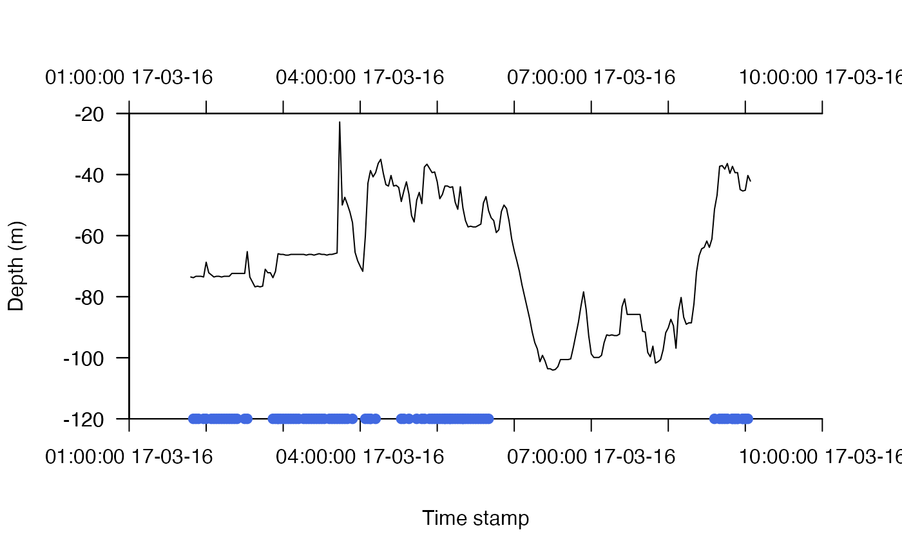
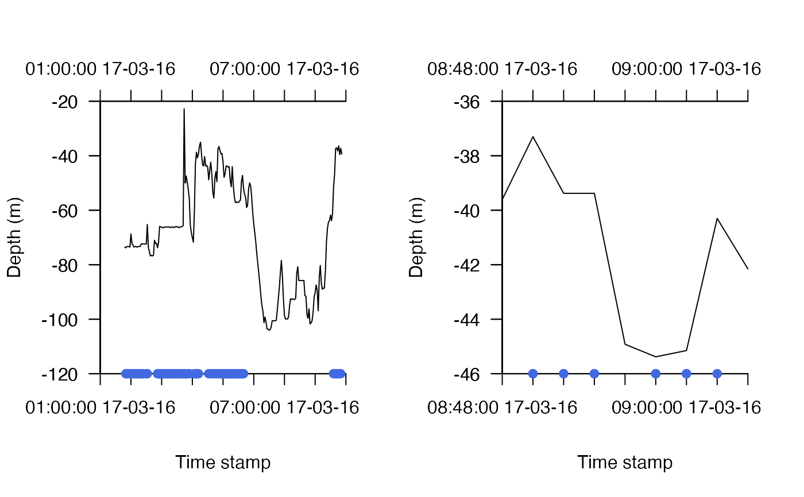
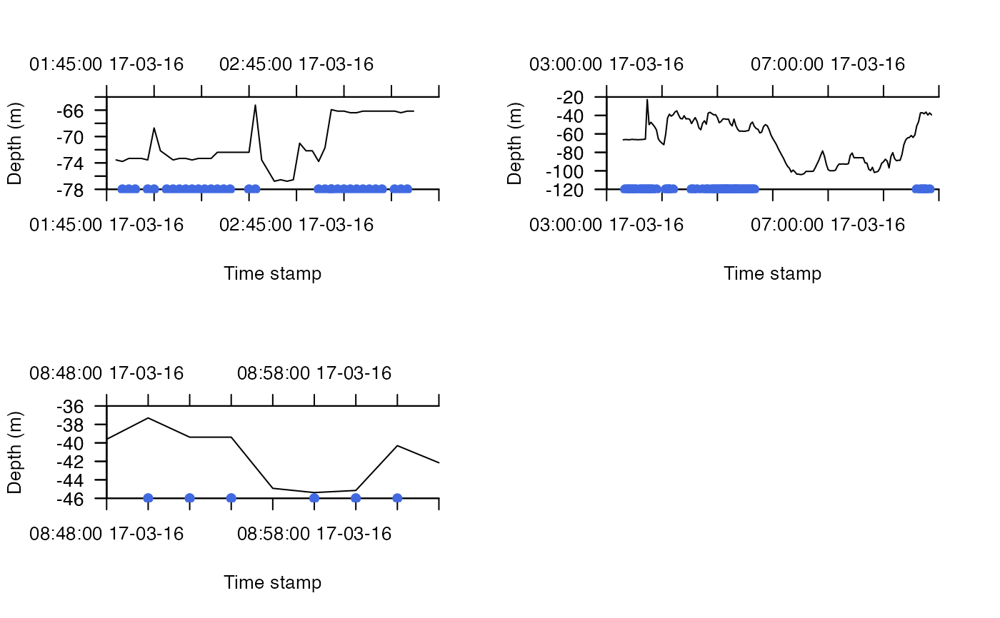
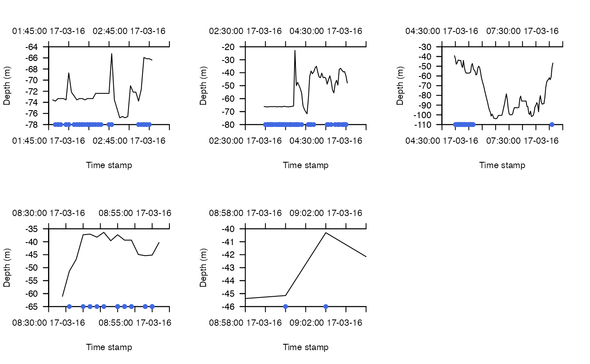

This function implements the acoustic-container depth-contour (ACDC) algorithm. This is an extension of the AC algorithm implemented by ac that that integrates acoustic detections and depth observations to the expected time spent in different parts of a study area over the period of observations. To implement the function, a dataframe (or list) of passive acoustic telemetry detections is required (acoustics), alongside a dataframe of depth observations (archival). At each time step, the algorithm integrates information from past and future acoustic detections in the form of acoustic containers and information from depth observations in the form of depth contours to determine the possible locations of an individual in an area (see Details). As for the AC algorithm (ac), the function can be implemented step-wise or chunk-wise and the outputs can be processed via acdc_simplify.
acdc( acoustics, archival, plot_ts = TRUE, bathy, detection_containers, detection_kernels = NULL, detection_kernels_overlap = NULL, detection_time_window = 5, mobility, calc_depth_error = function(...) matrix(c(-2.5, 2.5), nrow = 2), normalise = TRUE, save_record_spatial = 1L, write_record_spatial_for_pf = NULL, save_args = TRUE, verbose = TRUE, con = "", progress = 1L, split = NULL, cl = NULL, varlist = NULL )
| acoustics | A dataframe, or a list of dataframes, that contains passive acoustic telemetry detection time series (see |
|---|---|
| archival | A dataframe that contains depth time series (see |
| plot_ts | A logical input that defines whether or not to plot the detection and depth time series before the algorithm is initiated. This provides a useful visualisation of the extent to which they overlap. |
| bathy | A |
| detection_containers | A list of detection containers, with one element for each number from |
| detection_kernels | A named list of detection probability kernels (see |
| detection_kernels_overlap | (optional) A named list of detection probability kernel overlaps (see |
| detection_time_window | A number that defines the detection time window (see |
| mobility | The mobility parameter (see |
| calc_depth_error | A function that returns the depth errors around a vector of depths. The function should accept vector of depths (from |
| normalise | A logical input that defines whether or not to normalise maps (see |
| save_record_spatial | An integer of the spatial layers to save (see |
| write_record_spatial_for_pf | A named list used to write time step-specific maps to file (see |
| save_args | A logical input that defines whether or not to save the list of function inputs (see |
| verbose | A logical variable that defines whether or not to print messages to the console or to file to relay function progress (see |
| con | If |
| progress | An integer controlling the progress bar (see |
| split | A character string that defines the time unit used to split acoustic time series into chunks (see |
| cl, varlist | (optional) Parallelisation options (see |
The function returns an acdc_archive-class object. If a connection to write files has also been specified, an overall log (acdc_log.txt) as well as chunk-specific logs from calls to .acs, if applicable, are written to file.
The acoustic-container depth-contour (ACDC) algorithm is an approach which integrates acoustic detections and depth observations to infer the possible locations of tagged animals within an area over some time interval. The locational information provided by acoustic detections is represented by acoustic containers, which are areas around receivers that define where an individual could have been at each time point given the spatiotemporal pattern of detections at receivers, a model of detection probability and a movement parameter (see ac). The locational information provided by depth observations is represented by depth contours, which are areas that define where an individual could have been at each time point given its depth and the local bathymetry (see dc).
In outline, the crux of the approach is the recognition that acoustic detections typically occur irregularly, while archival observations occur at regular intervals. Each detection anchors our knowledge of the location of an individual around a particular receiver (assuming that all detections are true detections). As time passes between acoustic detections, our uncertainty about the geographical location of an individual expands around the receiver at which it was detected before shrinking towards the receiver at which it was next detected. (This is the AC algorithm.) During this time, regular depth observations restrict the number of possible locations in which the individual could have been located at each time step, assuming that the bathymetric landscape is non-homogeneous. This is true both for pelagic species, which must be in an area where the depth of the seabed is at least as deep as the observed depth, and for benthic/demersal species, which must be in an area where the depth of the seabed is relatively close to the observed depth. (This is the DC algorithm.) In reality, the timing of acoustic and archival observations may not align perfectly; this is currently resolved by rounding the acoustic time series to the temporal resolution of depth observations (see also ac). In this way, the ACDC algorithm moves over acoustic and archival time steps, summing the positions in which individuals could have been located based on these two sources of data, to generate a map of that shows expected time spent in different parts of the study area over the time interval under consideration.
This function calls .acs_pl and .acs to implement the ACDC algorithm. The AC component can be implemented via ac and the DC component via dc. acs_setup_containers defines the detection containers required by this function. acs_setup_mobility is used to examine the assumption of the constant `mobility' parameter. acs_setup_detection_kernels produces detection probability kernels for incorporation into the function. acdc_simplify simplifies the outputs and acdc_plot_trace, acdc_plot_record and acdc_animate_record visualise the results. Particle filtering can be used to reconstruct movement paths.
Edward Lavender
#### Step (1) Implement setup_acdc_*() steps # ... Define detection containers required for ACDC algorithm (see setup_acdc_containers()) #### Step (2) Prepare movement time series for algorithm # Focus on an example individual id <- 25 acc <- dat_acoustics[dat_acoustics$individual_id == id, ] arc <- dat_archival[dat_archival$individual_id == id, ] # Focus on the subset of data for which we have both acoustic and archival detections acc <- acc[acc$timestamp >= min(arc$timestamp) - 2*60 & acc$timestamp <= max(arc$timestamp) + 2*60, ] arc <- arc[arc$timestamp >= min(acc$timestamp) - 2*60 & arc$timestamp <= max(acc$timestamp) + 2*60, ] # We'll focus on a one day period with overlapping detection/depth time series for speed end <- as.POSIXct("2016-03-18") acc <- acc[acc$timestamp <= end, ] arc <- arc[arc$timestamp <= end, ] arc <- arc[arc$timestamp >= min(acc$timestamp) - 2*60 & arc$timestamp <= max(acc$timestamp) + 2*60, ] # Process time series (if necessary) # ... Observations should be processed to the nearest time step # ... Duplicate detections should be dropped #### Example (1) Implement ACDC algorithm with default arguments # This implements the algorithm on a single core, printing messages # ... to the console to monitor function progress. out_acdc <- acdc(acoustics = acc, archival = arc, bathy = dat_gebco, detection_containers = dat_containers, mobility = 200, calc_depth_error = function(...) matrix(c(-2.5, 2.5), nrow = 2) )#>#> flapper::.acs_pl() called (@ 2022-05-28 17:59:50)... #> ... Checking user inputs...#>#> ... Processing movement time series... #> ... Plotting movement time series (for each chunk)...#> ... Calling .acs() to implement ACDC algorithm on one chunk... #> flapper::.acs() called (@ 2022-05-28 17:59:50)... #> | | | 0%... Initiating algorithm: moving over acoustic and internal ('archival') time steps... #> ... On acoustic time step ('timestep_detection') 1. #> ... ... On internal time step ('timestep_archival') 1. #> | |= | 1%... On acoustic time step ('timestep_detection') 2. #> ... ... On internal time step ('timestep_archival') 1. #> | |= | 2%... On acoustic time step ('timestep_detection') 3. #> ... ... On internal time step ('timestep_archival') 1. #> ... ... On internal time step ('timestep_archival') 2. #> ... ... ... Acoustic container is expanding... #> | |== | 3%... On acoustic time step ('timestep_detection') 4. #> ... ... On internal time step ('timestep_archival') 1. #> | |=== | 4%... On acoustic time step ('timestep_detection') 5. #> ... ... On internal time step ('timestep_archival') 1. #> ... ... On internal time step ('timestep_archival') 2. #> ... ... ... Acoustic container is expanding... #> | |=== | 5%... On acoustic time step ('timestep_detection') 6. #> ... ... On internal time step ('timestep_archival') 1. #> | |==== | 6%... On acoustic time step ('timestep_detection') 7. #> ... ... On internal time step ('timestep_archival') 1. #> | |===== | 7%... On acoustic time step ('timestep_detection') 8. #> ... ... On internal time step ('timestep_archival') 1. #> | |====== | 8%... On acoustic time step ('timestep_detection') 9. #> ... ... On internal time step ('timestep_archival') 1. #> | |====== | 9%... On acoustic time step ('timestep_detection') 10. #> ... ... On internal time step ('timestep_archival') 1. #> | |======= | 10%... On acoustic time step ('timestep_detection') 11. #> ... ... On internal time step ('timestep_archival') 1. #> | |======== | 11%... On acoustic time step ('timestep_detection') 12. #> ... ... On internal time step ('timestep_archival') 1. #> | |======== | 12%... On acoustic time step ('timestep_detection') 13. #> ... ... On internal time step ('timestep_archival') 1. #> | |========= | 13%... On acoustic time step ('timestep_detection') 14. #> ... ... On internal time step ('timestep_archival') 1. #> | |========== | 14%... On acoustic time step ('timestep_detection') 15. #> ... ... On internal time step ('timestep_archival') 1. #> | |========== | 15%... On acoustic time step ('timestep_detection') 16. #> ... ... On internal time step ('timestep_archival') 1. #> ... ... On internal time step ('timestep_archival') 2. #> ... ... ... Acoustic container is expanding... #> ... ... On internal time step ('timestep_archival') 3. #> ... ... ... Acoustic container is constant ... #> | |=========== | 16%... On acoustic time step ('timestep_detection') 17. #> ... ... On internal time step ('timestep_archival') 1. #> | |============ | 17%... On acoustic time step ('timestep_detection') 18. #> ... ... On internal time step ('timestep_archival') 1. #> ... ... On internal time step ('timestep_archival') 2. #> ... ... On internal time step ('timestep_archival') 3. #> ... ... On internal time step ('timestep_archival') 4. #> ... ... On internal time step ('timestep_archival') 5. #> ... ... On internal time step ('timestep_archival') 6. #> ... ... On internal time step ('timestep_archival') 7. #> ... ... On internal time step ('timestep_archival') 8. #> ... ... On internal time step ('timestep_archival') 9. #> ... ... On internal time step ('timestep_archival') 10. #> | |============ | 18%... On acoustic time step ('timestep_detection') 19. #> ... ... On internal time step ('timestep_archival') 1. #> | |============= | 19%... On acoustic time step ('timestep_detection') 20. #> ... ... On internal time step ('timestep_archival') 1. #> | |============== | 20%... On acoustic time step ('timestep_detection') 21. #> ... ... On internal time step ('timestep_archival') 1. #> | |=============== | 21%... On acoustic time step ('timestep_detection') 22. #> ... ... On internal time step ('timestep_archival') 1. #> | |=============== | 22%... On acoustic time step ('timestep_detection') 23. #> ... ... On internal time step ('timestep_archival') 1. #> | |================ | 23%... On acoustic time step ('timestep_detection') 24. #> ... ... On internal time step ('timestep_archival') 1. #> | |================= | 24%... On acoustic time step ('timestep_detection') 25. #> ... ... On internal time step ('timestep_archival') 1. #> | |================= | 25%... On acoustic time step ('timestep_detection') 26. #> ... ... On internal time step ('timestep_archival') 1. #> | |================== | 26%... On acoustic time step ('timestep_detection') 27. #> ... ... On internal time step ('timestep_archival') 1. #> | |=================== | 27%... On acoustic time step ('timestep_detection') 28. #> ... ... On internal time step ('timestep_archival') 1. #> | |=================== | 28%... On acoustic time step ('timestep_detection') 29. #> ... ... On internal time step ('timestep_archival') 1. #> | |==================== | 29%... On acoustic time step ('timestep_detection') 30. #> ... ... On internal time step ('timestep_archival') 1. #> ... ... On internal time step ('timestep_archival') 2. #> ... ... ... Acoustic container is expanding... #> | |===================== | 30%... On acoustic time step ('timestep_detection') 31. #> ... ... On internal time step ('timestep_archival') 1. #> | |===================== | 31%... On acoustic time step ('timestep_detection') 32. #> ... ... On internal time step ('timestep_archival') 1. #> | |====================== | 32%... On acoustic time step ('timestep_detection') 33. #> ... ... On internal time step ('timestep_archival') 1. #> | |======================= | 33%... On acoustic time step ('timestep_detection') 34. #> ... ... On internal time step ('timestep_archival') 1. #> | |======================== | 34%... On acoustic time step ('timestep_detection') 35. #> ... ... On internal time step ('timestep_archival') 1. #> | |======================== | 35%... On acoustic time step ('timestep_detection') 36. #> ... ... On internal time step ('timestep_archival') 1. #> | |========================= | 36%... On acoustic time step ('timestep_detection') 37. #> ... ... On internal time step ('timestep_archival') 1. #> | |========================== | 37%... On acoustic time step ('timestep_detection') 38. #> ... ... On internal time step ('timestep_archival') 1. #> | |========================== | 38%... On acoustic time step ('timestep_detection') 39. #> ... ... On internal time step ('timestep_archival') 1. #> ... ... On internal time step ('timestep_archival') 2. #> ... ... ... Acoustic container is expanding... #> | |=========================== | 39%... On acoustic time step ('timestep_detection') 40. #> ... ... On internal time step ('timestep_archival') 1. #> | |============================ | 40%... On acoustic time step ('timestep_detection') 41. #> ... ... On internal time step ('timestep_archival') 1. #> | |============================ | 41%... On acoustic time step ('timestep_detection') 42. #> ... ... On internal time step ('timestep_archival') 1. #> | |============================= | 42%... On acoustic time step ('timestep_detection') 43. #> ... ... On internal time step ('timestep_archival') 1. #> | |============================== | 43%... On acoustic time step ('timestep_detection') 44. #> ... ... On internal time step ('timestep_archival') 1. #> | |============================== | 44%... On acoustic time step ('timestep_detection') 45. #> ... ... On internal time step ('timestep_archival') 1. #> | |=============================== | 45%... On acoustic time step ('timestep_detection') 46. #> ... ... On internal time step ('timestep_archival') 1. #> | |================================ | 46%... On acoustic time step ('timestep_detection') 47. #> ... ... On internal time step ('timestep_archival') 1. #> ... ... On internal time step ('timestep_archival') 2. #> ... ... ... Acoustic container is expanding... #> | |================================= | 47%... On acoustic time step ('timestep_detection') 48. #> ... ... On internal time step ('timestep_archival') 1. #> ... ... On internal time step ('timestep_archival') 2. #> ... ... ... Acoustic container is expanding... #> ... ... On internal time step ('timestep_archival') 3. #> ... ... ... Acoustic container is expanding... #> ... ... On internal time step ('timestep_archival') 4. #> ... ... ... Acoustic container is constant ... #> ... ... On internal time step ('timestep_archival') 5. #> ... ... ... Acoustic container is shrinking ... #> | |================================= | 48%... On acoustic time step ('timestep_detection') 49. #> ... ... On internal time step ('timestep_archival') 1. #> | |================================== | 49%... On acoustic time step ('timestep_detection') 50. #> ... ... On internal time step ('timestep_archival') 1. #> | |=================================== | 50%... On acoustic time step ('timestep_detection') 51. #> ... ... On internal time step ('timestep_archival') 1. #> ... On acoustic time step ('timestep_detection') 52. #> ... ... On internal time step ('timestep_archival') 1. #> ... ... On internal time step ('timestep_archival') 2. #> ... ... ... Acoustic container is expanding... #> | |==================================== | 51%... On acoustic time step ('timestep_detection') 53. #> ... ... On internal time step ('timestep_archival') 1. #> ... ... On internal time step ('timestep_archival') 2. #> ... ... On internal time step ('timestep_archival') 3. #> ... ... On internal time step ('timestep_archival') 4. #> ... ... On internal time step ('timestep_archival') 5. #> ... ... On internal time step ('timestep_archival') 6. #> ... ... On internal time step ('timestep_archival') 7. #> ... ... On internal time step ('timestep_archival') 8. #> ... ... On internal time step ('timestep_archival') 9. #> ... ... On internal time step ('timestep_archival') 10. #> | |===================================== | 52%... On acoustic time step ('timestep_detection') 54. #> ... ... On internal time step ('timestep_archival') 1. #> | |===================================== | 53%... On acoustic time step ('timestep_detection') 55. #> ... ... On internal time step ('timestep_archival') 1. #> ... ... On internal time step ('timestep_archival') 2. #> ... ... ... Acoustic container is expanding... #> | |====================================== | 54%... On acoustic time step ('timestep_detection') 56. #> ... ... On internal time step ('timestep_archival') 1. #> ... ... On internal time step ('timestep_archival') 2. #> ... ... ... Acoustic container is expanding... #> ... ... On internal time step ('timestep_archival') 3. #> ... ... ... Acoustic container is constant ... #> | |======================================= | 55%... On acoustic time step ('timestep_detection') 57. #> ... ... On internal time step ('timestep_archival') 1. #> ... ... On internal time step ('timestep_archival') 2. #> ... ... ... Acoustic container is expanding... #> | |======================================== | 56%... On acoustic time step ('timestep_detection') 58. #> ... ... On internal time step ('timestep_archival') 1. #> | |======================================== | 57%... On acoustic time step ('timestep_detection') 59. #> ... ... On internal time step ('timestep_archival') 1. #> ... ... On internal time step ('timestep_archival') 2. #> ... ... ... Acoustic container is expanding... #> | |========================================= | 58%... On acoustic time step ('timestep_detection') 60. #> ... ... On internal time step ('timestep_archival') 1. #> | |========================================== | 59%... On acoustic time step ('timestep_detection') 61. #> ... ... On internal time step ('timestep_archival') 1. #> | |========================================== | 60%... On acoustic time step ('timestep_detection') 62. #> ... ... On internal time step ('timestep_archival') 1. #> | |=========================================== | 61%... On acoustic time step ('timestep_detection') 63. #> ... ... On internal time step ('timestep_archival') 1. #> | |============================================ | 62%... On acoustic time step ('timestep_detection') 64. #> ... ... On internal time step ('timestep_archival') 1. #> | |============================================ | 63%... On acoustic time step ('timestep_detection') 65. #> ... ... On internal time step ('timestep_archival') 1. #> | |============================================= | 64%... On acoustic time step ('timestep_detection') 66. #> ... ... On internal time step ('timestep_archival') 1. #> | |============================================== | 65%... On acoustic time step ('timestep_detection') 67. #> ... ... On internal time step ('timestep_archival') 1. #> | |============================================== | 66%... On acoustic time step ('timestep_detection') 68. #> ... ... On internal time step ('timestep_archival') 1. #> | |=============================================== | 67%... On acoustic time step ('timestep_detection') 69. #> ... ... On internal time step ('timestep_archival') 1. #> | |================================================ | 68%... On acoustic time step ('timestep_detection') 70. #> ... ... On internal time step ('timestep_archival') 1. #> | |================================================= | 69%... On acoustic time step ('timestep_detection') 71. #> ... ... On internal time step ('timestep_archival') 1. #> | |================================================= | 70%... On acoustic time step ('timestep_detection') 72. #> ... ... On internal time step ('timestep_archival') 1. #> | |================================================== | 71%... On acoustic time step ('timestep_detection') 73. #> ... ... On internal time step ('timestep_archival') 1. #> | |=================================================== | 72%... On acoustic time step ('timestep_detection') 74. #> ... ... On internal time step ('timestep_archival') 1. #> | |=================================================== | 73%... On acoustic time step ('timestep_detection') 75. #> ... ... On internal time step ('timestep_archival') 1. #> | |==================================================== | 74%... On acoustic time step ('timestep_detection') 76. #> ... ... On internal time step ('timestep_archival') 1. #> | |===================================================== | 75%... On acoustic time step ('timestep_detection') 77. #> ... ... On internal time step ('timestep_archival') 1. #> | |===================================================== | 76%... On acoustic time step ('timestep_detection') 78. #> ... ... On internal time step ('timestep_archival') 1. #> | |====================================================== | 77%... On acoustic time step ('timestep_detection') 79. #> ... ... On internal time step ('timestep_archival') 1. #> | |======================================================= | 78%... On acoustic time step ('timestep_detection') 80. #> ... ... On internal time step ('timestep_archival') 1. #> | |======================================================= | 79%... On acoustic time step ('timestep_detection') 81. #> ... ... On internal time step ('timestep_archival') 1. #> | |======================================================== | 80%... On acoustic time step ('timestep_detection') 82. #> ... ... On internal time step ('timestep_archival') 1. #> | |========================================================= | 81%... On acoustic time step ('timestep_detection') 83. #> ... ... On internal time step ('timestep_archival') 1. #> | |========================================================== | 82%... On acoustic time step ('timestep_detection') 84. #> ... ... On internal time step ('timestep_archival') 1. #> | |========================================================== | 83%... On acoustic time step ('timestep_detection') 85. #> ... ... On internal time step ('timestep_archival') 1. #> | |=========================================================== | 84%... On acoustic time step ('timestep_detection') 86. #> ... ... On internal time step ('timestep_archival') 1. #> ... ... On internal time step ('timestep_archival') 2. #> ... ... ... Acoustic container is expanding... #> ... ... On internal time step ('timestep_archival') 3. #> ... ... ... Acoustic container is expanding... #> ... ... On internal time step ('timestep_archival') 4. #> ... ... ... Acoustic container is expanding... #> ... ... On internal time step ('timestep_archival') 5. #> ... ... ... Acoustic container is expanding... #> ... ... On internal time step ('timestep_archival') 6. #> ... ... ... Acoustic container is expanding... #> ... ... On internal time step ('timestep_archival') 7. #> ... ... ... Acoustic container is expanding... #> ... ... On internal time step ('timestep_archival') 8. #> ... ... ... Acoustic container is expanding... #> ... ... On internal time step ('timestep_archival') 9. #> ... ... ... Acoustic container is expanding... #> ... ... On internal time step ('timestep_archival') 10. #> ... ... ... Acoustic container is expanding... #> ... ... On internal time step ('timestep_archival') 11. #> ... ... ... Acoustic container is expanding... #> ... ... On internal time step ('timestep_archival') 12. #> ... ... ... Acoustic container is expanding... #> ... ... On internal time step ('timestep_archival') 13. #> ... ... ... Acoustic container is expanding... #> ... ... On internal time step ('timestep_archival') 14. #> ... ... ... Acoustic container is expanding... #> ... ... On internal time step ('timestep_archival') 15. #> ... ... ... Acoustic container is expanding... #> ... ... On internal time step ('timestep_archival') 16. #> ... ... ... Acoustic container is expanding... #> ... ... On internal time step ('timestep_archival') 17. #> ... ... ... Acoustic container is expanding... #> ... ... On internal time step ('timestep_archival') 18. #> ... ... ... Acoustic container is expanding... #> ... ... On internal time step ('timestep_archival') 19. #> ... ... ... Acoustic container is expanding... #> ... ... On internal time step ('timestep_archival') 20. #> ... ... ... Acoustic container is expanding... #> ... ... On internal time step ('timestep_archival') 21. #> ... ... ... Acoustic container is expanding... #> ... ... On internal time step ('timestep_archival') 22. #> ... ... ... Acoustic container is expanding... #> ... ... On internal time step ('timestep_archival') 23. #> ... ... ... Acoustic container is expanding... #> ... ... On internal time step ('timestep_archival') 24. #> ... ... ... Acoustic container is expanding... #> ... ... On internal time step ('timestep_archival') 25. #> ... ... ... Acoustic container is expanding... #> ... ... On internal time step ('timestep_archival') 26. #> ... ... ... Acoustic container is expanding... #> ... ... On internal time step ('timestep_archival') 27. #> ... ... ... Acoustic container is expanding... #> ... ... On internal time step ('timestep_archival') 28. #> ... ... ... Acoustic container is expanding... #> ... ... On internal time step ('timestep_archival') 29. #> ... ... ... Acoustic container is expanding... #> ... ... On internal time step ('timestep_archival') 30. #> ... ... ... Acoustic container is expanding... #> ... ... On internal time step ('timestep_archival') 31. #> ... ... ... Acoustic container is expanding... #> ... ... On internal time step ('timestep_archival') 32. #> ... ... ... Acoustic container is expanding... #> ... ... On internal time step ('timestep_archival') 33. #> ... ... ... Acoustic container is expanding... #> ... ... On internal time step ('timestep_archival') 34. #> ... ... ... Acoustic container is expanding... #> ... ... On internal time step ('timestep_archival') 35. #> ... ... ... Acoustic container is expanding... #> ... ... On internal time step ('timestep_archival') 36. #> ... ... ... Acoustic container is expanding... #> ... ... On internal time step ('timestep_archival') 37. #> ... ... ... Acoustic container is expanding... #> ... ... On internal time step ('timestep_archival') 38. #> ... ... ... Acoustic container is expanding... #> ... ... On internal time step ('timestep_archival') 39. #> ... ... ... Acoustic container is expanding... #> ... ... On internal time step ('timestep_archival') 40. #> ... ... ... Acoustic container is expanding... #> ... ... On internal time step ('timestep_archival') 41. #> ... ... ... Acoustic container is expanding... #> ... ... On internal time step ('timestep_archival') 42. #> ... ... ... Acoustic container is expanding... #> ... ... On internal time step ('timestep_archival') 43. #> ... ... ... Acoustic container is expanding... #> ... ... On internal time step ('timestep_archival') 44. #> ... ... ... Acoustic container is expanding... #> ... ... On internal time step ('timestep_archival') 45. #> ... ... ... Acoustic container is expanding... #> ... ... On internal time step ('timestep_archival') 46. #> ... ... ... Acoustic container is shrinking ... #> ... ... On internal time step ('timestep_archival') 47. #> ... ... ... Acoustic container is shrinking ... #> ... ... On internal time step ('timestep_archival') 48. #> ... ... ... Acoustic container is shrinking ... #> ... ... On internal time step ('timestep_archival') 49. #> ... ... ... Acoustic container is shrinking ... #> ... ... On internal time step ('timestep_archival') 50. #> ... ... ... Acoustic container is shrinking ... #> ... ... On internal time step ('timestep_archival') 51. #> ... ... ... Acoustic container is shrinking ... #> ... ... On internal time step ('timestep_archival') 52. #> ... ... ... Acoustic container is shrinking ... #> ... ... On internal time step ('timestep_archival') 53. #> ... ... ... Acoustic container is shrinking ... #> ... ... On internal time step ('timestep_archival') 54. #> ... ... ... Acoustic container is shrinking ... #> ... ... On internal time step ('timestep_archival') 55. #> ... ... ... Acoustic container is shrinking ... #> ... ... On internal time step ('timestep_archival') 56. #> ... ... ... Acoustic container is shrinking ... #> ... ... On internal time step ('timestep_archival') 57. #> ... ... ... Acoustic container is shrinking ... #> ... ... On internal time step ('timestep_archival') 58. #> ... ... ... Acoustic container is shrinking ... #> ... ... On internal time step ('timestep_archival') 59. #> ... ... ... Acoustic container is shrinking ... #> ... ... On internal time step ('timestep_archival') 60. #> ... ... ... Acoustic container is shrinking ... #> ... ... On internal time step ('timestep_archival') 61. #> ... ... ... Acoustic container is shrinking ... #> ... ... On internal time step ('timestep_archival') 62. #> ... ... ... Acoustic container is shrinking ... #> ... ... On internal time step ('timestep_archival') 63. #> ... ... ... Acoustic container is shrinking ... #> ... ... On internal time step ('timestep_archival') 64. #> ... ... ... Acoustic container is shrinking ... #> ... ... On internal time step ('timestep_archival') 65. #> ... ... ... Acoustic container is shrinking ... #> ... ... On internal time step ('timestep_archival') 66. #> ... ... ... Acoustic container is shrinking ... #> ... ... On internal time step ('timestep_archival') 67. #> ... ... ... Acoustic container is shrinking ... #> ... ... On internal time step ('timestep_archival') 68. #> ... ... ... Acoustic container is shrinking ... #> ... ... On internal time step ('timestep_archival') 69. #> ... ... ... Acoustic container is shrinking ... #> ... ... On internal time step ('timestep_archival') 70. #> ... ... ... Acoustic container is shrinking ... #> ... ... On internal time step ('timestep_archival') 71. #> ... ... ... Acoustic container is shrinking ... #> ... ... On internal time step ('timestep_archival') 72. #> ... ... ... Acoustic container is shrinking ... #> ... ... On internal time step ('timestep_archival') 73. #> ... ... ... Acoustic container is shrinking ... #> ... ... On internal time step ('timestep_archival') 74. #> ... ... ... Acoustic container is shrinking ... #> ... ... On internal time step ('timestep_archival') 75. #> ... ... ... Acoustic container is shrinking ... #> ... ... On internal time step ('timestep_archival') 76. #> ... ... ... Acoustic container is shrinking ... #> ... ... On internal time step ('timestep_archival') 77. #> ... ... ... Acoustic container is shrinking ... #> ... ... On internal time step ('timestep_archival') 78. #> ... ... ... Acoustic container is shrinking ... #> ... ... On internal time step ('timestep_archival') 79. #> ... ... ... Acoustic container is shrinking ... #> ... ... On internal time step ('timestep_archival') 80. #> ... ... ... Acoustic container is shrinking ... #> ... ... On internal time step ('timestep_archival') 81. #> ... ... ... Acoustic container is shrinking ... #> ... ... On internal time step ('timestep_archival') 82. #> ... ... ... Acoustic container is shrinking ... #> ... ... On internal time step ('timestep_archival') 83. #> ... ... ... Acoustic container is shrinking ... #> ... ... On internal time step ('timestep_archival') 84. #> ... ... ... Acoustic container is shrinking ... #> ... ... On internal time step ('timestep_archival') 85. #> ... ... ... Acoustic container is shrinking ... #> ... ... On internal time step ('timestep_archival') 86. #> ... ... ... Acoustic container is shrinking ... #> ... ... On internal time step ('timestep_archival') 87. #> ... ... ... Acoustic container is shrinking ... #> ... ... On internal time step ('timestep_archival') 88. #> ... ... ... Acoustic container is shrinking ... #> | |============================================================ | 85%... On acoustic time step ('timestep_detection') 87. #> ... ... On internal time step ('timestep_archival') 1. #> ... ... On internal time step ('timestep_archival') 2. #> ... ... ... Acoustic container is expanding... #> | |============================================================ | 86%... On acoustic time step ('timestep_detection') 88. #> ... ... On internal time step ('timestep_archival') 1. #> | |============================================================= | 87%... On acoustic time step ('timestep_detection') 89. #> ... ... On internal time step ('timestep_archival') 1. #> | |============================================================== | 88%... On acoustic time step ('timestep_detection') 90. #> ... ... On internal time step ('timestep_archival') 1. #> | |============================================================== | 89%... On acoustic time step ('timestep_detection') 91. #> ... ... On internal time step ('timestep_archival') 1. #> ... ... On internal time step ('timestep_archival') 2. #> ... ... ... Acoustic container is expanding... #> | |=============================================================== | 90%... On acoustic time step ('timestep_detection') 92. #> ... ... On internal time step ('timestep_archival') 1. #> | |================================================================ | 91%... On acoustic time step ('timestep_detection') 93. #> ... ... On internal time step ('timestep_archival') 1. #> | |================================================================ | 92%... On acoustic time step ('timestep_detection') 94. #> ... ... On internal time step ('timestep_archival') 1. #> | |================================================================= | 93%... On acoustic time step ('timestep_detection') 95. #> ... ... On internal time step ('timestep_archival') 1. #> | |================================================================== | 94%... On acoustic time step ('timestep_detection') 96. #> ... ... On internal time step ('timestep_archival') 1. #> | |=================================================================== | 95%... On acoustic time step ('timestep_detection') 97. #> ... ... On internal time step ('timestep_archival') 1. #> ... ... On internal time step ('timestep_archival') 2. #> | |=================================================================== | 96%... On acoustic time step ('timestep_detection') 98. #> ... ... On internal time step ('timestep_archival') 1. #> | |==================================================================== | 97%... On acoustic time step ('timestep_detection') 99. #> ... ... On internal time step ('timestep_archival') 1. #> | |===================================================================== | 98%... On acoustic time step ('timestep_detection') 100. #> ... ... On internal time step ('timestep_archival') 1. #> | |===================================================================== | 99%... On acoustic time step ('timestep_detection') 101. #> ... ... On internal time step ('timestep_archival') 1. #> | |======================================================================| 100% #> ... Movement over acoustic and internal ('archival') time steps has been completed. #> ... flapper::.acs() call completed (@ 2022-05-28 17:59:58) after ~0.13 minutes. #> ... flapper::.acs_pl() call completed (@ 2022-05-28 17:59:58) after ~0.13 minutes.#># The function returns a list with four elements # ... archive contains the results of the algorithm, implemented by the back-end # ... function .acs(). The other elements provide the time series # ... for each chunk, the time of the algorithm and a list of user inputs summary(out_acdc)#> Length Class Mode #> archive 1 -none- list #> ts_by_chunk 1 -none- list #> time 4 data.frame list #> args 19 -none- list#### Example (2): Write messages to file to monitor function progress via 'con' out_acdc <- acdc(acoustics = acc, archival = arc, bathy = dat_gebco, detection_containers = dat_containers, mobility = 200, calc_depth_error = function(...) matrix(c(-2.5, 2.5), nrow = 2), con = tempdir() )#>#>#>#>#>#> | | | 0% | |= | 1% | |= | 2% | |== | 3% | |=== | 4% | |=== | 5% | |==== | 6% | |===== | 7% | |====== | 8% | |====== | 9% | |======= | 10% | |======== | 11% | |======== | 12% | |========= | 13% | |========== | 14% | |========== | 15% | |=========== | 16% | |============ | 17% | |============ | 18% | |============= | 19% | |============== | 20% | |=============== | 21% | |=============== | 22% | |================ | 23% | |================= | 24% | |================= | 25% | |================== | 26% | |=================== | 27% | |=================== | 28% | |==================== | 29% | |===================== | 30% | |===================== | 31% | |====================== | 32% | |======================= | 33% | |======================== | 34% | |======================== | 35% | |========================= | 36% | |========================== | 37% | |========================== | 38% | |=========================== | 39% | |============================ | 40% | |============================ | 41% | |============================= | 42% | |============================== | 43% | |============================== | 44% | |=============================== | 45% | |================================ | 46% | |================================= | 47% | |================================= | 48% | |================================== | 49% | |=================================== | 50% | |==================================== | 51% | |===================================== | 52% | |===================================== | 53% | |====================================== | 54% | |======================================= | 55% | |======================================== | 56% | |======================================== | 57% | |========================================= | 58% | |========================================== | 59% | |========================================== | 60% | |=========================================== | 61% | |============================================ | 62% | |============================================ | 63% | |============================================= | 64% | |============================================== | 65% | |============================================== | 66% | |=============================================== | 67% | |================================================ | 68% | |================================================= | 69% | |================================================= | 70% | |================================================== | 71% | |=================================================== | 72% | |=================================================== | 73% | |==================================================== | 74% | |===================================================== | 75% | |===================================================== | 76% | |====================================================== | 77% | |======================================================= | 78% | |======================================================= | 79% | |======================================================== | 80% | |========================================================= | 81% | |========================================================== | 82% | |========================================================== | 83% | |=========================================================== | 84% | |============================================================ | 85% | |============================================================ | 86% | |============================================================= | 87% | |============================================================== | 88% | |============================================================== | 89% | |=============================================================== | 90% | |================================================================ | 91% | |================================================================ | 92% | |================================================================= | 93% | |================================================================== | 94% | |=================================================================== | 95% | |=================================================================== | 96% | |==================================================================== | 97% | |===================================================================== | 98% | |===================================================================== | 99% | |======================================================================| 100%#>#> [1] "flapper::.acs_pl() called (@ 2022-05-28 17:59:58)... " #> [2] "... Checking user inputs... " #> [3] "... Processing movement time series... " #> [4] "... Plotting movement time series (for each chunk)... " #> [5] "... Calling .acs() to implement ACDC algorithm on one chunk... " #> [6] "flapper::.acs() called (@ 2022-05-28 17:59:58)... " #> [7] "... Initiating algorithm: moving over acoustic and internal ('archival') time steps... " #> [8] "... On acoustic time step ('timestep_detection') 1. " #> [9] "... ... On internal time step ('timestep_archival') 1. " #> [10] "... On acoustic time step ('timestep_detection') 2. "#> [1] TRUE#### Example (3): Implement the algorithm and return spatial information # Specify save_record_spatial = NULL to include spatial information for all time steps # ... or a vector to include this information for specific time steps out_acdc <- acdc(acoustics = acc, archival = arc, bathy = dat_gebco, detection_containers = dat_containers, mobility = 200, calc_depth_error = function(...) matrix(c(-2.5, 2.5), nrow = 2), save_record_spatial = NULL )#>#> flapper::.acs_pl() called (@ 2022-05-28 18:00:06)... #> ... Checking user inputs...#>#> ... Processing movement time series... #> ... Plotting movement time series (for each chunk)...#> ... Calling .acs() to implement ACDC algorithm on one chunk... #> flapper::.acs() called (@ 2022-05-28 18:00:06)... #> | | | 0%... Initiating algorithm: moving over acoustic and internal ('archival') time steps... #> ... On acoustic time step ('timestep_detection') 1. #> ... ... On internal time step ('timestep_archival') 1. #> | |= | 1%... On acoustic time step ('timestep_detection') 2. #> ... ... On internal time step ('timestep_archival') 1. #> | |= | 2%... On acoustic time step ('timestep_detection') 3. #> ... ... On internal time step ('timestep_archival') 1. #> ... ... On internal time step ('timestep_archival') 2. #> ... ... ... Acoustic container is expanding... #> | |== | 3%... On acoustic time step ('timestep_detection') 4. #> ... ... On internal time step ('timestep_archival') 1. #> | |=== | 4%... On acoustic time step ('timestep_detection') 5. #> ... ... On internal time step ('timestep_archival') 1. #> ... ... On internal time step ('timestep_archival') 2. #> ... ... ... Acoustic container is expanding... #> | |=== | 5%... On acoustic time step ('timestep_detection') 6. #> ... ... On internal time step ('timestep_archival') 1. #> | |==== | 6%... On acoustic time step ('timestep_detection') 7. #> ... ... On internal time step ('timestep_archival') 1. #> | |===== | 7%... On acoustic time step ('timestep_detection') 8. #> ... ... On internal time step ('timestep_archival') 1. #> | |====== | 8%... On acoustic time step ('timestep_detection') 9. #> ... ... On internal time step ('timestep_archival') 1. #> | |====== | 9%... On acoustic time step ('timestep_detection') 10. #> ... ... On internal time step ('timestep_archival') 1. #> | |======= | 10%... On acoustic time step ('timestep_detection') 11. #> ... ... On internal time step ('timestep_archival') 1. #> | |======== | 11%... On acoustic time step ('timestep_detection') 12. #> ... ... On internal time step ('timestep_archival') 1. #> | |======== | 12%... On acoustic time step ('timestep_detection') 13. #> ... ... On internal time step ('timestep_archival') 1. #> | |========= | 13%... On acoustic time step ('timestep_detection') 14. #> ... ... On internal time step ('timestep_archival') 1. #> | |========== | 14%... On acoustic time step ('timestep_detection') 15. #> ... ... On internal time step ('timestep_archival') 1. #> | |========== | 15%... On acoustic time step ('timestep_detection') 16. #> ... ... On internal time step ('timestep_archival') 1. #> ... ... On internal time step ('timestep_archival') 2. #> ... ... ... Acoustic container is expanding... #> ... ... On internal time step ('timestep_archival') 3. #> ... ... ... Acoustic container is constant ... #> | |=========== | 16%... On acoustic time step ('timestep_detection') 17. #> ... ... On internal time step ('timestep_archival') 1. #> | |============ | 17%... On acoustic time step ('timestep_detection') 18. #> ... ... On internal time step ('timestep_archival') 1. #> ... ... On internal time step ('timestep_archival') 2. #> ... ... On internal time step ('timestep_archival') 3. #> ... ... On internal time step ('timestep_archival') 4. #> ... ... On internal time step ('timestep_archival') 5. #> ... ... On internal time step ('timestep_archival') 6. #> ... ... On internal time step ('timestep_archival') 7. #> ... ... On internal time step ('timestep_archival') 8. #> ... ... On internal time step ('timestep_archival') 9. #> ... ... On internal time step ('timestep_archival') 10. #> | |============ | 18%... On acoustic time step ('timestep_detection') 19. #> ... ... On internal time step ('timestep_archival') 1. #> | |============= | 19%... On acoustic time step ('timestep_detection') 20. #> ... ... On internal time step ('timestep_archival') 1. #> | |============== | 20%... On acoustic time step ('timestep_detection') 21. #> ... ... On internal time step ('timestep_archival') 1. #> | |=============== | 21%... On acoustic time step ('timestep_detection') 22. #> ... ... On internal time step ('timestep_archival') 1. #> | |=============== | 22%... On acoustic time step ('timestep_detection') 23. #> ... ... On internal time step ('timestep_archival') 1. #> | |================ | 23%... On acoustic time step ('timestep_detection') 24. #> ... ... On internal time step ('timestep_archival') 1. #> | |================= | 24%... On acoustic time step ('timestep_detection') 25. #> ... ... On internal time step ('timestep_archival') 1. #> | |================= | 25%... On acoustic time step ('timestep_detection') 26. #> ... ... On internal time step ('timestep_archival') 1. #> | |================== | 26%... On acoustic time step ('timestep_detection') 27. #> ... ... On internal time step ('timestep_archival') 1. #> | |=================== | 27%... On acoustic time step ('timestep_detection') 28. #> ... ... On internal time step ('timestep_archival') 1. #> | |=================== | 28%... On acoustic time step ('timestep_detection') 29. #> ... ... On internal time step ('timestep_archival') 1. #> | |==================== | 29%... On acoustic time step ('timestep_detection') 30. #> ... ... On internal time step ('timestep_archival') 1. #> ... ... On internal time step ('timestep_archival') 2. #> ... ... ... Acoustic container is expanding... #> | |===================== | 30%... On acoustic time step ('timestep_detection') 31. #> ... ... On internal time step ('timestep_archival') 1. #> | |===================== | 31%... On acoustic time step ('timestep_detection') 32. #> ... ... On internal time step ('timestep_archival') 1. #> | |====================== | 32%... On acoustic time step ('timestep_detection') 33. #> ... ... On internal time step ('timestep_archival') 1. #> | |======================= | 33%... On acoustic time step ('timestep_detection') 34. #> ... ... On internal time step ('timestep_archival') 1. #> | |======================== | 34%... On acoustic time step ('timestep_detection') 35. #> ... ... On internal time step ('timestep_archival') 1. #> | |======================== | 35%... On acoustic time step ('timestep_detection') 36. #> ... ... On internal time step ('timestep_archival') 1. #> | |========================= | 36%... On acoustic time step ('timestep_detection') 37. #> ... ... On internal time step ('timestep_archival') 1. #> | |========================== | 37%... On acoustic time step ('timestep_detection') 38. #> ... ... On internal time step ('timestep_archival') 1. #> | |========================== | 38%... On acoustic time step ('timestep_detection') 39. #> ... ... On internal time step ('timestep_archival') 1. #> ... ... On internal time step ('timestep_archival') 2. #> ... ... ... Acoustic container is expanding... #> | |=========================== | 39%... On acoustic time step ('timestep_detection') 40. #> ... ... On internal time step ('timestep_archival') 1. #> | |============================ | 40%... On acoustic time step ('timestep_detection') 41. #> ... ... On internal time step ('timestep_archival') 1. #> | |============================ | 41%... On acoustic time step ('timestep_detection') 42. #> ... ... On internal time step ('timestep_archival') 1. #> | |============================= | 42%... On acoustic time step ('timestep_detection') 43. #> ... ... On internal time step ('timestep_archival') 1. #> | |============================== | 43%... On acoustic time step ('timestep_detection') 44. #> ... ... On internal time step ('timestep_archival') 1. #> | |============================== | 44%... On acoustic time step ('timestep_detection') 45. #> ... ... On internal time step ('timestep_archival') 1. #> | |=============================== | 45%... On acoustic time step ('timestep_detection') 46. #> ... ... On internal time step ('timestep_archival') 1. #> | |================================ | 46%... On acoustic time step ('timestep_detection') 47. #> ... ... On internal time step ('timestep_archival') 1. #> ... ... On internal time step ('timestep_archival') 2. #> ... ... ... Acoustic container is expanding... #> | |================================= | 47%... On acoustic time step ('timestep_detection') 48. #> ... ... On internal time step ('timestep_archival') 1. #> ... ... On internal time step ('timestep_archival') 2. #> ... ... ... Acoustic container is expanding... #> ... ... On internal time step ('timestep_archival') 3. #> ... ... ... Acoustic container is expanding... #> ... ... On internal time step ('timestep_archival') 4. #> ... ... ... Acoustic container is constant ... #> ... ... On internal time step ('timestep_archival') 5. #> ... ... ... Acoustic container is shrinking ... #> | |================================= | 48%... On acoustic time step ('timestep_detection') 49. #> ... ... On internal time step ('timestep_archival') 1. #> | |================================== | 49%... On acoustic time step ('timestep_detection') 50. #> ... ... On internal time step ('timestep_archival') 1. #> | |=================================== | 50%... On acoustic time step ('timestep_detection') 51. #> ... ... On internal time step ('timestep_archival') 1. #> ... On acoustic time step ('timestep_detection') 52. #> ... ... On internal time step ('timestep_archival') 1. #> ... ... On internal time step ('timestep_archival') 2. #> ... ... ... Acoustic container is expanding... #> | |==================================== | 51%... On acoustic time step ('timestep_detection') 53. #> ... ... On internal time step ('timestep_archival') 1. #> ... ... On internal time step ('timestep_archival') 2. #> ... ... On internal time step ('timestep_archival') 3. #> ... ... On internal time step ('timestep_archival') 4. #> ... ... On internal time step ('timestep_archival') 5. #> ... ... On internal time step ('timestep_archival') 6. #> ... ... On internal time step ('timestep_archival') 7. #> ... ... On internal time step ('timestep_archival') 8. #> ... ... On internal time step ('timestep_archival') 9. #> ... ... On internal time step ('timestep_archival') 10. #> | |===================================== | 52%... On acoustic time step ('timestep_detection') 54. #> ... ... On internal time step ('timestep_archival') 1. #> | |===================================== | 53%... On acoustic time step ('timestep_detection') 55. #> ... ... On internal time step ('timestep_archival') 1. #> ... ... On internal time step ('timestep_archival') 2. #> ... ... ... Acoustic container is expanding... #> | |====================================== | 54%... On acoustic time step ('timestep_detection') 56. #> ... ... On internal time step ('timestep_archival') 1. #> ... ... On internal time step ('timestep_archival') 2. #> ... ... ... Acoustic container is expanding... #> ... ... On internal time step ('timestep_archival') 3. #> ... ... ... Acoustic container is constant ... #> | |======================================= | 55%... On acoustic time step ('timestep_detection') 57. #> ... ... On internal time step ('timestep_archival') 1. #> ... ... On internal time step ('timestep_archival') 2. #> ... ... ... Acoustic container is expanding... #> | |======================================== | 56%... On acoustic time step ('timestep_detection') 58. #> ... ... On internal time step ('timestep_archival') 1. #> | |======================================== | 57%... On acoustic time step ('timestep_detection') 59. #> ... ... On internal time step ('timestep_archival') 1. #> ... ... On internal time step ('timestep_archival') 2. #> ... ... ... Acoustic container is expanding... #> | |========================================= | 58%... On acoustic time step ('timestep_detection') 60. #> ... ... On internal time step ('timestep_archival') 1. #> | |========================================== | 59%... On acoustic time step ('timestep_detection') 61. #> ... ... On internal time step ('timestep_archival') 1. #> | |========================================== | 60%... On acoustic time step ('timestep_detection') 62. #> ... ... On internal time step ('timestep_archival') 1. #> | |=========================================== | 61%... On acoustic time step ('timestep_detection') 63. #> ... ... On internal time step ('timestep_archival') 1. #> | |============================================ | 62%... On acoustic time step ('timestep_detection') 64. #> ... ... On internal time step ('timestep_archival') 1. #> | |============================================ | 63%... On acoustic time step ('timestep_detection') 65. #> ... ... On internal time step ('timestep_archival') 1. #> | |============================================= | 64%... On acoustic time step ('timestep_detection') 66. #> ... ... On internal time step ('timestep_archival') 1. #> | |============================================== | 65%... On acoustic time step ('timestep_detection') 67. #> ... ... On internal time step ('timestep_archival') 1. #> | |============================================== | 66%... On acoustic time step ('timestep_detection') 68. #> ... ... On internal time step ('timestep_archival') 1. #> | |=============================================== | 67%... On acoustic time step ('timestep_detection') 69. #> ... ... On internal time step ('timestep_archival') 1. #> | |================================================ | 68%... On acoustic time step ('timestep_detection') 70. #> ... ... On internal time step ('timestep_archival') 1. #> | |================================================= | 69%... On acoustic time step ('timestep_detection') 71. #> ... ... On internal time step ('timestep_archival') 1. #> | |================================================= | 70%... On acoustic time step ('timestep_detection') 72. #> ... ... On internal time step ('timestep_archival') 1. #> | |================================================== | 71%... On acoustic time step ('timestep_detection') 73. #> ... ... On internal time step ('timestep_archival') 1. #> | |=================================================== | 72%... On acoustic time step ('timestep_detection') 74. #> ... ... On internal time step ('timestep_archival') 1. #> | |=================================================== | 73%... On acoustic time step ('timestep_detection') 75. #> ... ... On internal time step ('timestep_archival') 1. #> | |==================================================== | 74%... On acoustic time step ('timestep_detection') 76. #> ... ... On internal time step ('timestep_archival') 1. #> | |===================================================== | 75%... On acoustic time step ('timestep_detection') 77. #> ... ... On internal time step ('timestep_archival') 1. #> | |===================================================== | 76%... On acoustic time step ('timestep_detection') 78. #> ... ... On internal time step ('timestep_archival') 1. #> | |====================================================== | 77%... On acoustic time step ('timestep_detection') 79. #> ... ... On internal time step ('timestep_archival') 1. #> | |======================================================= | 78%... On acoustic time step ('timestep_detection') 80. #> ... ... On internal time step ('timestep_archival') 1. #> | |======================================================= | 79%... On acoustic time step ('timestep_detection') 81. #> ... ... On internal time step ('timestep_archival') 1. #> | |======================================================== | 80%... On acoustic time step ('timestep_detection') 82. #> ... ... On internal time step ('timestep_archival') 1. #> | |========================================================= | 81%... On acoustic time step ('timestep_detection') 83. #> ... ... On internal time step ('timestep_archival') 1. #> | |========================================================== | 82%... On acoustic time step ('timestep_detection') 84. #> ... ... On internal time step ('timestep_archival') 1. #> | |========================================================== | 83%... On acoustic time step ('timestep_detection') 85. #> ... ... On internal time step ('timestep_archival') 1. #> | |=========================================================== | 84%... On acoustic time step ('timestep_detection') 86. #> ... ... On internal time step ('timestep_archival') 1. #> ... ... On internal time step ('timestep_archival') 2. #> ... ... ... Acoustic container is expanding... #> ... ... On internal time step ('timestep_archival') 3. #> ... ... ... Acoustic container is expanding... #> ... ... On internal time step ('timestep_archival') 4. #> ... ... ... Acoustic container is expanding... #> ... ... On internal time step ('timestep_archival') 5. #> ... ... ... Acoustic container is expanding... #> ... ... On internal time step ('timestep_archival') 6. #> ... ... ... Acoustic container is expanding... #> ... ... On internal time step ('timestep_archival') 7. #> ... ... ... Acoustic container is expanding... #> ... ... On internal time step ('timestep_archival') 8. #> ... ... ... Acoustic container is expanding... #> ... ... On internal time step ('timestep_archival') 9. #> ... ... ... Acoustic container is expanding... #> ... ... On internal time step ('timestep_archival') 10. #> ... ... ... Acoustic container is expanding... #> ... ... On internal time step ('timestep_archival') 11. #> ... ... ... Acoustic container is expanding... #> ... ... On internal time step ('timestep_archival') 12. #> ... ... ... Acoustic container is expanding... #> ... ... On internal time step ('timestep_archival') 13. #> ... ... ... Acoustic container is expanding... #> ... ... On internal time step ('timestep_archival') 14. #> ... ... ... Acoustic container is expanding... #> ... ... On internal time step ('timestep_archival') 15. #> ... ... ... Acoustic container is expanding... #> ... ... On internal time step ('timestep_archival') 16. #> ... ... ... Acoustic container is expanding... #> ... ... On internal time step ('timestep_archival') 17. #> ... ... ... Acoustic container is expanding... #> ... ... On internal time step ('timestep_archival') 18. #> ... ... ... Acoustic container is expanding... #> ... ... On internal time step ('timestep_archival') 19. #> ... ... ... Acoustic container is expanding... #> ... ... On internal time step ('timestep_archival') 20. #> ... ... ... Acoustic container is expanding... #> ... ... On internal time step ('timestep_archival') 21. #> ... ... ... Acoustic container is expanding... #> ... ... On internal time step ('timestep_archival') 22. #> ... ... ... Acoustic container is expanding... #> ... ... On internal time step ('timestep_archival') 23. #> ... ... ... Acoustic container is expanding... #> ... ... On internal time step ('timestep_archival') 24. #> ... ... ... Acoustic container is expanding... #> ... ... On internal time step ('timestep_archival') 25. #> ... ... ... Acoustic container is expanding... #> ... ... On internal time step ('timestep_archival') 26. #> ... ... ... Acoustic container is expanding... #> ... ... On internal time step ('timestep_archival') 27. #> ... ... ... Acoustic container is expanding... #> ... ... On internal time step ('timestep_archival') 28. #> ... ... ... Acoustic container is expanding... #> ... ... On internal time step ('timestep_archival') 29. #> ... ... ... Acoustic container is expanding... #> ... ... On internal time step ('timestep_archival') 30. #> ... ... ... Acoustic container is expanding... #> ... ... On internal time step ('timestep_archival') 31. #> ... ... ... Acoustic container is expanding... #> ... ... On internal time step ('timestep_archival') 32. #> ... ... ... Acoustic container is expanding... #> ... ... On internal time step ('timestep_archival') 33. #> ... ... ... Acoustic container is expanding... #> ... ... On internal time step ('timestep_archival') 34. #> ... ... ... Acoustic container is expanding... #> ... ... On internal time step ('timestep_archival') 35. #> ... ... ... Acoustic container is expanding... #> ... ... On internal time step ('timestep_archival') 36. #> ... ... ... Acoustic container is expanding... #> ... ... On internal time step ('timestep_archival') 37. #> ... ... ... Acoustic container is expanding... #> ... ... On internal time step ('timestep_archival') 38. #> ... ... ... Acoustic container is expanding... #> ... ... On internal time step ('timestep_archival') 39. #> ... ... ... Acoustic container is expanding... #> ... ... On internal time step ('timestep_archival') 40. #> ... ... ... Acoustic container is expanding... #> ... ... On internal time step ('timestep_archival') 41. #> ... ... ... Acoustic container is expanding... #> ... ... On internal time step ('timestep_archival') 42. #> ... ... ... Acoustic container is expanding... #> ... ... On internal time step ('timestep_archival') 43. #> ... ... ... Acoustic container is expanding... #> ... ... On internal time step ('timestep_archival') 44. #> ... ... ... Acoustic container is expanding... #> ... ... On internal time step ('timestep_archival') 45. #> ... ... ... Acoustic container is expanding... #> ... ... On internal time step ('timestep_archival') 46. #> ... ... ... Acoustic container is shrinking ... #> ... ... On internal time step ('timestep_archival') 47. #> ... ... ... Acoustic container is shrinking ... #> ... ... On internal time step ('timestep_archival') 48. #> ... ... ... Acoustic container is shrinking ... #> ... ... On internal time step ('timestep_archival') 49. #> ... ... ... Acoustic container is shrinking ... #> ... ... On internal time step ('timestep_archival') 50. #> ... ... ... Acoustic container is shrinking ... #> ... ... On internal time step ('timestep_archival') 51. #> ... ... ... Acoustic container is shrinking ... #> ... ... On internal time step ('timestep_archival') 52. #> ... ... ... Acoustic container is shrinking ... #> ... ... On internal time step ('timestep_archival') 53. #> ... ... ... Acoustic container is shrinking ... #> ... ... On internal time step ('timestep_archival') 54. #> ... ... ... Acoustic container is shrinking ... #> ... ... On internal time step ('timestep_archival') 55. #> ... ... ... Acoustic container is shrinking ... #> ... ... On internal time step ('timestep_archival') 56. #> ... ... ... Acoustic container is shrinking ... #> ... ... On internal time step ('timestep_archival') 57. #> ... ... ... Acoustic container is shrinking ... #> ... ... On internal time step ('timestep_archival') 58. #> ... ... ... Acoustic container is shrinking ... #> ... ... On internal time step ('timestep_archival') 59. #> ... ... ... Acoustic container is shrinking ... #> ... ... On internal time step ('timestep_archival') 60. #> ... ... ... Acoustic container is shrinking ... #> ... ... On internal time step ('timestep_archival') 61. #> ... ... ... Acoustic container is shrinking ... #> ... ... On internal time step ('timestep_archival') 62. #> ... ... ... Acoustic container is shrinking ... #> ... ... On internal time step ('timestep_archival') 63. #> ... ... ... Acoustic container is shrinking ... #> ... ... On internal time step ('timestep_archival') 64. #> ... ... ... Acoustic container is shrinking ... #> ... ... On internal time step ('timestep_archival') 65. #> ... ... ... Acoustic container is shrinking ... #> ... ... On internal time step ('timestep_archival') 66. #> ... ... ... Acoustic container is shrinking ... #> ... ... On internal time step ('timestep_archival') 67. #> ... ... ... Acoustic container is shrinking ... #> ... ... On internal time step ('timestep_archival') 68. #> ... ... ... Acoustic container is shrinking ... #> ... ... On internal time step ('timestep_archival') 69. #> ... ... ... Acoustic container is shrinking ... #> ... ... On internal time step ('timestep_archival') 70. #> ... ... ... Acoustic container is shrinking ... #> ... ... On internal time step ('timestep_archival') 71. #> ... ... ... Acoustic container is shrinking ... #> ... ... On internal time step ('timestep_archival') 72. #> ... ... ... Acoustic container is shrinking ... #> ... ... On internal time step ('timestep_archival') 73. #> ... ... ... Acoustic container is shrinking ... #> ... ... On internal time step ('timestep_archival') 74. #> ... ... ... Acoustic container is shrinking ... #> ... ... On internal time step ('timestep_archival') 75. #> ... ... ... Acoustic container is shrinking ... #> ... ... On internal time step ('timestep_archival') 76. #> ... ... ... Acoustic container is shrinking ... #> ... ... On internal time step ('timestep_archival') 77. #> ... ... ... Acoustic container is shrinking ... #> ... ... On internal time step ('timestep_archival') 78. #> ... ... ... Acoustic container is shrinking ... #> ... ... On internal time step ('timestep_archival') 79. #> ... ... ... Acoustic container is shrinking ... #> ... ... On internal time step ('timestep_archival') 80. #> ... ... ... Acoustic container is shrinking ... #> ... ... On internal time step ('timestep_archival') 81. #> ... ... ... Acoustic container is shrinking ... #> ... ... On internal time step ('timestep_archival') 82. #> ... ... ... Acoustic container is shrinking ... #> ... ... On internal time step ('timestep_archival') 83. #> ... ... ... Acoustic container is shrinking ... #> ... ... On internal time step ('timestep_archival') 84. #> ... ... ... Acoustic container is shrinking ... #> ... ... On internal time step ('timestep_archival') 85. #> ... ... ... Acoustic container is shrinking ... #> ... ... On internal time step ('timestep_archival') 86. #> ... ... ... Acoustic container is shrinking ... #> ... ... On internal time step ('timestep_archival') 87. #> ... ... ... Acoustic container is shrinking ... #> ... ... On internal time step ('timestep_archival') 88. #> ... ... ... Acoustic container is shrinking ... #> | |============================================================ | 85%... On acoustic time step ('timestep_detection') 87. #> ... ... On internal time step ('timestep_archival') 1. #> ... ... On internal time step ('timestep_archival') 2. #> ... ... ... Acoustic container is expanding... #> | |============================================================ | 86%... On acoustic time step ('timestep_detection') 88. #> ... ... On internal time step ('timestep_archival') 1. #> | |============================================================= | 87%... On acoustic time step ('timestep_detection') 89. #> ... ... On internal time step ('timestep_archival') 1. #> | |============================================================== | 88%... On acoustic time step ('timestep_detection') 90. #> ... ... On internal time step ('timestep_archival') 1. #> | |============================================================== | 89%... On acoustic time step ('timestep_detection') 91. #> ... ... On internal time step ('timestep_archival') 1. #> ... ... On internal time step ('timestep_archival') 2. #> ... ... ... Acoustic container is expanding... #> | |=============================================================== | 90%... On acoustic time step ('timestep_detection') 92. #> ... ... On internal time step ('timestep_archival') 1. #> | |================================================================ | 91%... On acoustic time step ('timestep_detection') 93. #> ... ... On internal time step ('timestep_archival') 1. #> | |================================================================ | 92%... On acoustic time step ('timestep_detection') 94. #> ... ... On internal time step ('timestep_archival') 1. #> | |================================================================= | 93%... On acoustic time step ('timestep_detection') 95. #> ... ... On internal time step ('timestep_archival') 1. #> | |================================================================== | 94%... On acoustic time step ('timestep_detection') 96. #> ... ... On internal time step ('timestep_archival') 1. #> | |=================================================================== | 95%... On acoustic time step ('timestep_detection') 97. #> ... ... On internal time step ('timestep_archival') 1. #> ... ... On internal time step ('timestep_archival') 2. #> | |=================================================================== | 96%... On acoustic time step ('timestep_detection') 98. #> ... ... On internal time step ('timestep_archival') 1. #> | |==================================================================== | 97%... On acoustic time step ('timestep_detection') 99. #> ... ... On internal time step ('timestep_archival') 1. #> | |===================================================================== | 98%... On acoustic time step ('timestep_detection') 100. #> ... ... On internal time step ('timestep_archival') 1. #> | |===================================================================== | 99%... On acoustic time step ('timestep_detection') 101. #> ... ... On internal time step ('timestep_archival') 1. #> | |======================================================================| 100% #> ... Movement over acoustic and internal ('archival') time steps has been completed. #> ... flapper::.acs() call completed (@ 2022-05-28 18:00:13) after ~0.13 minutes. #> ... flapper::.acs_pl() call completed (@ 2022-05-28 18:00:13) after ~0.13 minutes.#>#### Example (4): Implement the algorithm in parallel e.g. by supplying a cluster # If verbose = TRUE (the default), it is necessary to specify a directory # ... into which dot_acdc_log_*.txt files are saved (i.e., messages # ... cannot be written to the console in parallel) out_acdc <- acdc(acoustics = acc, archival = arc, bathy = dat_gebco, detection_containers = dat_containers, mobility = 200, calc_depth_error = function(...) matrix(c(-2.5, 2.5), nrow = 2), con = tempdir(), cl = parallel::makeCluster(2L) )#>#>#>#>#>#>#>#>#>#>#>#>#>#> [1] "acdc_log.txt" "dot_acdc_log_1.txt" "dot_acdc_log_2.txt" #> [4] "downlit" "file16ae112203e38.so" "file16ae11339cbd2" #> [7] "file16ae163a5a0bf"# "acdc_log.txt" contains the log for the overall function acdc_log <- readLines(paste0(tempdir(), "/acdc_log.txt")) head(acdc_log, 20)#> [1] "flapper::.acs_pl() called (@ 2022-05-28 18:00:13)... " #> [2] "... Checking user inputs... " #> [3] "... Splitting 'acoustics' into chunks... " #> [4] "... Processing acoustics chunks... " #> [5] "... ... Checking for NULL/empty chunks... " #> [6] "... ... Overlapping chunks... " #> [7] "... Processing movement time series... " #> [8] "... ... Chunk 1 : 6 archival observation(s) beyond the ranges of (processed) acoustic detections ignored. " #> [9] "... ... Chunk 2 : 210 archival observation(s) beyond the ranges of (processed) acoustic detections ignored. " #> [10] "... Plotting movement time series (for each chunk)... " #> [11] "... Defining chunk-specific log files as dot_acdc_log_1.txt, dot_acdc_log_2.txt etc... " #> [12] "... ... /var/folders/lx/dhz6yx2n2b7bg93hwz8t97zr0000gq/T//Rtmpwmdj7E/dot_acdc_log_1.txt does not exist: attempting to write file in specified directory... " #> [13] "... ... ... Blank file successfully written to file. " #> [14] "... ... /var/folders/lx/dhz6yx2n2b7bg93hwz8t97zr0000gq/T//Rtmpwmdj7E/dot_acdc_log_2.txt does not exist: attempting to write file in specified directory... " #> [15] "... ... ... Blank file successfully written to file. " #> [16] "... Calling .acs() to implement ACDC algorithm on 2 chunks, using 2 cores... " #> [17] "... flapper::.acs_pl() call completed (@ 2022-05-28 18:00:26) after ~0.21 minutes. "# "acdc_log_1.txt", "acdc_log_2.txt" etc contain chunk-specific logs acdc_log_1 <- readLines(paste0(tempdir(), "/dot_acdc_log_1.txt")) utils::head(acdc_log_1)#> [1] "flapper::.acs() called (@ 2022-05-28 18:00:14)... " #> [2] "... Initiating algorithm: moving over acoustic and internal ('archival') time steps... " #> [3] "... On acoustic time step ('timestep_detection') 1. " #> [4] "... ... On internal time step ('timestep_archival') 1. " #> [5] "... On acoustic time step ('timestep_detection') 2. " #> [6] "... ... On internal time step ('timestep_archival') 1. "#> [1] "... On acoustic time step ('timestep_detection') 91. " #> [2] "... ... On internal time step ('timestep_archival') 1. " #> [3] "... ... On internal time step ('timestep_archival') 2. " #> [4] "... ... ... Acoustic container is expanding... " #> [5] "... Movement over acoustic and internal ('archival') time steps has been completed. " #> [6] "... flapper::.acs() call completed (@ 2022-05-28 18:00:25) after ~0.18 minutes. "## Examine outputs # Note that there are now four elements in archive, one for each chunk # Likewise, there are four elements in ts_by_chunk, # ... containing the movement time series for each chunk. summary(out_acdc)#> Length Class Mode #> archive 2 -none- list #> ts_by_chunk 2 -none- list #> time 4 data.frame list #> args 19 -none- list# Note that the last observation of each time series overlaps with the # ... first observation for the next chunk, to prevent loss of information lapply(out_acdc$ts_by_chunk, function(chunk) chunk$acoustics[c(1, nrow(chunk$acoustics)), ])#> [[1]] #> individual_id transmitter_id index timestamp receiver_id #> 1 25 A69-1303-555 1 2016-03-17 01:50:00 26 #> 92 25 A69-1303-555 138 2016-03-17 08:50:00 26 #> receiver receiver_long receiver_lat receiver_depth dup split_permit #> 1 VR2W-108163 -5.610733 56.37628 25 FALSE FALSE #> 92 VR2W-108163 -5.610733 56.37628 25 FALSE TRUE #> bin timestamp_num #> 1 2016-03-17 01:00:00 1458179400 #> 92 2016-03-17 05:00:00 1458204600 #> #> [[2]] #> individual_id transmitter_id index timestamp receiver_id #> 92 25 A69-1303-555 138 2016-03-17 08:50:00 26 #> 102 25 A69-1303-555 154 2016-03-17 09:02:00 26 #> receiver receiver_long receiver_lat receiver_depth dup split_permit #> 92 VR2W-108163 -5.610733 56.37628 25 FALSE TRUE #> 102 VR2W-108163 -5.610733 56.37628 25 FALSE FALSE #> bin timestamp_num #> 92 2016-03-17 05:00:00 1458204600 #> 102 2016-03-17 09:00:00 1458205320 #>#### Example (5) Biologically meaningful chunks can be specified via # .. the 'split' argument or by passing a list of acoustic time series # .. already split by list of dataframes to 'acoustics' ## Using the split argument: out_acdc <- acdc(acoustics = acc, archival = arc, bathy = dat_gebco, detection_containers = dat_containers, mobility = 200, calc_depth_error = function(...) matrix(c(-2.5, 2.5), nrow = 2), con = tempdir(), cl = parallel::makeCluster(2L), split = "2 hours" )#>#>#>#>#>#>#>#>#>#>## Passing a list of dataframes # This option can provide more flexibility than split. # ... This example could also be used using split, as described above, # ... but this is not the case for all time categories (e.g., seasons). acc$chunk <- cut(acc$timestamp, "2 hours") acc_ls <- split(acc, acc$chunk) out_acdc <- acdc(acoustics = acc_ls, archival = arc, bathy = dat_gebco, detection_containers = dat_containers, mobility = 200, calc_depth_error = function(...) matrix(c(-2.5, 2.5), nrow = 2), con = tempdir(), cl = parallel::makeCluster(2L) )#>#>#>#>#>#>#>#>#>#>#>#>#>#### Example (5) Implement the algorithm for multiple individuals # ... To do this, it is necessary to apply the function iteratively # ... to each individual. # Pre-processing to define computation time # ... E.g., careful definition of time series if(flapper_run_slow){ # Define cluster cluster <- FALSE if(cluster){ cl <- parallel::makeCluster(2L) parallel::clusterExport(cl = cl, varlist = c("acdc", "dat_archival", "dat_gebco", "dat_containers" )) } else cl <- NULL # Implement algorithm for each individual acdc_out_by_id <- pbapply::pblapply(split(dat_acoustics, dat_acoustics$individual_id), cl = cl, function(acc){ # Define individual-specific folder in which to save function logs dir_global <- paste0(tempdir(), "/") dir_id <- paste0(dir_global, acc$individual_id[1], "/") if(!dir.exists(dir_id)) dir.create(dir_id) # Focus on a small sample of time series for speed acc <- acc[1:3, ] # Isolate archival data for individual arc <- dat_archival[dat_archival$individual_id == acc$id[1], ] # Implement algorithm acdc_out <- acdc(acoustics = acc, archival = dat_archival, bathy = dat_gebco, detection_containers = dat_containers, mobility = 200, calc_depth_error = function(...) matrix(c(-2.5, 2.5), nrow = 2), save_record_spatial = 1:10L, con = dir_id ) # Include logs in output acdc_log <- lapply(list.files(dir_id, full.names = TRUE), readLines) # Simplify the results at this stage or outside of this loop # ... using acdc_simplify() # Return results for specified individual out <- list(acdc_id = acc$individual_id[1], acdc_out = acdc_out, acdc_log = acdc_log) return(out) }) if(!is.null(cl)) parallel::stopCluster(cl) summary(acdc_out_by_id) }#>#>#>#>#>#>#>#> | | | 0% | |=================================== | 50% | |======================================================================| 100%#>#>#>#>#>#>#>#>#> | | | 0% | |=================================== | 50% | |======================================================================| 100%#>#>#>#>#>#>#>#>#> | | | 0% | |=================================== | 50% | |======================================================================| 100%#>#> Length Class Mode #> 25 3 -none- list #> 28 3 -none- list #> 35 3 -none- list#### Step (3) Simplify the function outputs # This step aggregates information across chunks, which is necessary to # ... plot information aggregated across all chunks (see below). #### Step (4) Examine function outputs, e.g., via plotting # See acdc_plot_record() and acdc_animate_record() to visualise the results # ... (either for a specific chunk or aggregated across all chunks # ... using acdc_simplify() as described above).